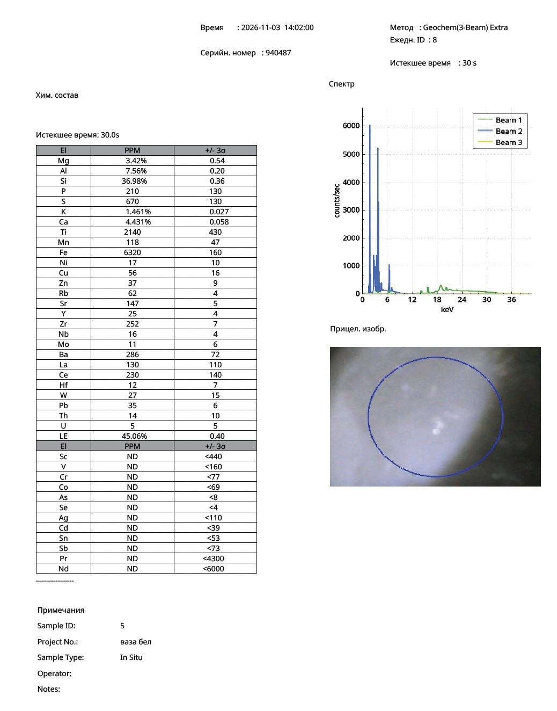
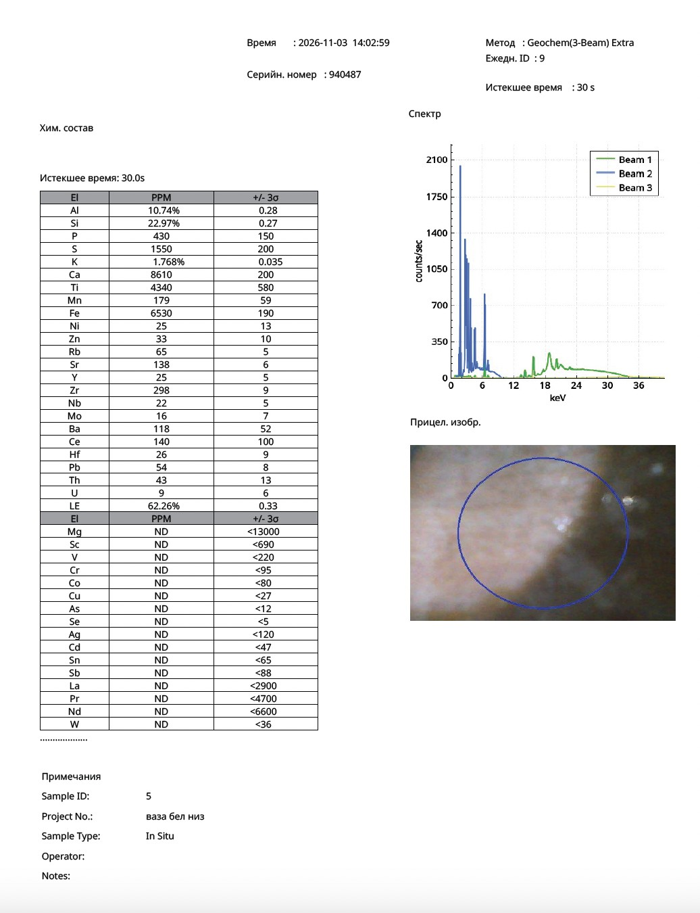

Research Article · Reference Object ro-song-003
X-Ray Fluorescence Analysis of a White Ding-Type Vase (定窯): Glaze and Body Composition in the Context of Twelfth-Century Northern Chinese Porcelain Technology
Nona Dronova — Zenodo, 2026 — Northern Song–Jin Ding White Ware · pXRF
Abstract
This article presents the results of portable X-ray fluorescence (pXRF) analysis of a carved white Ding-type vase from a private research collection of Chinese ceramics. The investigation was carried out on two areas of the vessel: the glazed outer surface and the unglazed base.
The results reveal a clear chemical distinction between the glaze and the ceramic body. The glazed surface is characterised by elevated concentrations of calcium (4.431 wt% Ca), magnesium (3.42 wt% Mg) and silicon (36.98 wt% Si), whereas the unglazed base shows higher concentrations of aluminium (10.74 wt% Al) and titanium (4340 ppm Ti).
Both analysed areas show extremely low lead concentrations (35 ppm and 54 ppm respectively), confirming the use of a leadless high-temperature ceramic technology.
The glaze composition corresponds to the calcium–magnesium silicate system characteristic of traditional white Ding ware. The analytical data are consistent with published archaeometric studies of Ding kiln ceramics and demonstrate the technological features of high-fired porcelain production in northern China.
Keywords: Ding ware; Dingyao; Northern Song dynasty; Jin dynasty; Chinese porcelain; X-ray fluorescence analysis; archaeometry; ceramic technology; calcium glaze; white ware.
1. Introduction
Ding porcelain (定窯) represents one of the most important achievements of Chinese ceramic production during the Northern Song and Jin periods. Produced in the Dingzhou area of Hebei province, Ding ware is renowned for its refined white body, elegant ivory-toned glaze and delicate carved decoration.
Among the most characteristic decorative motifs of Ding ware are lotus petals, peonies and finely executed foliate scrolls, carved before glazing. The technical perfection of these wares reflects a highly developed ceramic tradition based on carefully selected raw materials and controlled high-temperature firing.
Recent archaeometric studies have demonstrated the importance of compositional analysis for understanding the technological basis of Ding production, in particular the relationship between the chemical composition of the glaze and that of the ceramic body.
The present study examines the chemical composition of a carved white vase with lotus decoration by portable X-ray fluorescence spectroscopy in order to characterise the glaze and body materials and to document the technological features of the vessel.
2. Description of the Object
The vessel is registered in the research archive under the inventory number SS-DING-VAS-005-SN.
The vase has the following morphological characteristics:
- a globular body;
- a tall flaring neck;
- two raised horizontal rings;
- deeply carved foliate-scroll decoration;
- a lower frieze of large lotus petals.
The decorative motifs were executed before glazing and remain clearly visible beneath the glaze.
The surface is covered with a creamy-white glaze of warm ivory tone. Slight variations in colour intensity are observed in the recesses of the decoration, corresponding to local variations in glaze thickness.
The base consists of an unglazed foot ring exposing a light beige ceramic body.
The overall morphology corresponds closely to the classic tradition of white Ding ware produced in the twelfth century.
3. Materials and Methods
The vessel was analysed by portable X-ray fluorescence spectroscopy (pXRF) in Geochem (3-Beam) Extra mode.
| Parameter | Recorded value |
|---|---|
| Instrument serial number | 940487 |
| Analytical mode | Geochem (3-Beam) Extra |
| Date | 3 November 2026 |
| Acquisition time | 30 seconds per point |
| Sample ID | 5 |
| Measurement No. 8 (“white vase”) | Glazed outer surface (14:02:00) |
| Measurement No. 9 (“white vase, base”) | Unglazed foot ring, ceramic body (14:02:59) |
| Measurement type | In situ, non-destructive |
Two analytical points were examined:
- Measurement No. 8 (“white vase”) — glazed outer surface of the vessel.
- Measurement No. 9 (“white vase, base”) — unglazed foot ring, representing the ceramic body.
Concentrations are reported in weight per cent and parts per million (ppm).
4. Results
Table 1. Composition of the principal elements.
| Element | Glazed surface | Unglazed base |
|---|---|---|
| Si | 36.98% | 22.97% |
| Al | 7.56% | 10.74% |
| Ca | 4.431% | 0.861% |
| K | 1.461% | 1.768% |
| Mg | 3.42% | ND |
| Fe | 6320 ppm | 6530 ppm |
| Ti | 2140 ppm | 4340 ppm |
| Rb | 62 ppm | 65 ppm |
| Sr | 147 ppm | 138 ppm |
| Zr | 252 ppm | 298 ppm |
| Pb | 35 ppm | 54 ppm |
The results demonstrate a pronounced chemical contrast between the glaze and the ceramic body.
The most marked difference is in the calcium concentration, which in the glazed area is more than five times higher than in the ceramic body.
5. Composition of the Glaze
The glazed surface is characterised by the following element concentrations:
- Si = 36.98%;
- Ca = 4.431%;
- Mg = 3.42%;
- K = 1.461%.
This combination indicates a calcium–magnesium silicate glaze formed under high-temperature firing conditions.
The simultaneous presence of calcium and magnesium as the principal fluxing agents of the glaze system is of particular significance. These components play an important role in promoting vitrification and the formation of a transparent glassy surface.
The high silicon concentration reflects the predominance of the silicate glassy phase responsible for the characteristic appearance of the glaze.
6. Composition of the Ceramic Body
The unglazed base shows higher concentrations of aluminium and titanium than the glaze.
Principal values:
- Al = 10.74%;
- Ti = 4340 ppm;
- Fe = 6530 ppm.
Compared with the glaze, the ceramic body contains:
- higher concentrations of aluminium;
- higher concentrations of titanium;
- considerably lower concentrations of calcium.
This distribution of elements reflects the technological distinction between the refractory ceramic body and the glassy glaze layer.
7. Leadless Ceramic Technology
One of the most significant results of the investigation is the extremely low lead concentration.
Measured values:
- lead in the glaze: 35 ppm;
- lead in the ceramic body: 54 ppm.
These concentrations are trace values and differ fundamentally from those of low-temperature lead-glazed ceramics.
The data demonstrate the use of a leadless high-temperature porcelain technology.
8. Technological Interpretation
The analytical data indicate a coherent ceramic technology comprising:
- A silica-enriched glaze.
- Calcium-based fluxes.
- Magnesium-bearing glaze components.
- An aluminosilicate ceramic body.
- A leadless glaze technology.
- High-temperature firing.
The chemical separation between glaze and body indicates the deliberate use of technologically different materials in the manufacturing process.
Particular attention should be paid to the lower titanium concentration in the glaze compared with the ceramic body, reflecting the selective enrichment and depletion of elements characteristic of high-quality porcelain production.
9. Comparison with Published Archaeometric Studies
The analytical characteristics observed in the vase correspond closely to the technological features documented in archaeometric studies of Ding ware:
- a calcium-rich glaze chemistry;
- the presence of magnesium as an important fluxing component;
- a lower titanium concentration in the glaze than in the body;
- a leadless high-temperature firing technology;
- a clear compositional distinction between glaze and ceramic body.
The simultaneous presence of calcium and magnesium is of particular significance and corresponds to the compositional characteristics documented for historical northern Chinese white porcelain.
The morphological features of the vase — the carved lotus decoration, the raised rings on the neck, the globular body and the ivory-toned glaze — are fully consistent with the technological profile established by X-ray fluorescence analysis.
10. Conclusion
Portable X-ray fluorescence analysis of the carved white Ding-type vase SS-DING-VAS-005-SN established the following technological characteristics:
- The glaze contains elevated concentrations of calcium (4.431 wt%) and magnesium (3.42 wt%), forming a calcium–magnesium silicate glaze system.
- The ceramic body contains higher concentrations of aluminium (10.74 wt%) and titanium (4340 ppm).
- The calcium concentration in the glaze is more than five times that in the ceramic body.
- Lead is present only in trace amounts, confirming the use of a leadless high-temperature firing technology.
- The distribution of major and trace elements corresponds to the technological characteristics of traditional Ding ware production.
General conclusion. The X-ray fluorescence data demonstrate a technologically integrated ceramic system consisting of a calcium–magnesium silicate glaze, an aluminosilicate porcelain body and a leadless high-temperature firing technology. The results provide a comprehensive archaeometric characterisation of the vase and document the principal technological features of the Ding ceramic tradition.
Original pXRF Protocols
Portable XRF analyser, serial no. 940487 — 3 November 2026

Fig. 1. Measurement No. 8 — glazed outer surface. Click to open full size.

Fig. 2. Measurement No. 9 — unglazed foot ring (ceramic body). Click to open full size.
References
Cui, J., Wood, N., Qin, D., et al. (2012). Chemical analysis of white porcelains from the Ding Kiln site, Hebei Province, China. Journal of Archaeological Science, 39(4), 818–827.
Cui, J., Qin, D., Li, X., Zhou, L. (2012). Chemical analysis and comparative study of white porcelain fragments from the Ding, Xing and Gongyi kiln sites. Sciences of Conservation and Archaeology, 24(4).
Kingery, W. D., Vandiver, P. B., Prickett, M. (1988). The beginnings of pyrotechnology, Part II: production and use of lime and gypsum plaster in the Pre-Pottery Neolithic Near East. Journal of Field Archaeology.
National Palace Museum, Taipei. Decorated Dingzhou Porcelain: Ding White Wares in the Collection of the National Palace Museum. Taipei.
The Metropolitan Museum of Art. Bottle vase, Ding ware, Northern Song dynasty. Accession no. 1991.253.14.
Christie's. A very rare Ding white-glazed vase with foliate rim, Song dynasty (960–1279).
Sacke auction. A rare carved Dingyao vase with lotus rim (huakouping), Northern Song–Jin dynasty.
Suggested Citation
Dronova, N. (2026). X-Ray Fluorescence Analysis of a White Ding-Type Vase (定窯): Glaze and Body Composition in the Context of Twelfth-Century Northern Chinese Porcelain Technology. Zenodo. https://doi.org/10.5281/zenodo.23954710